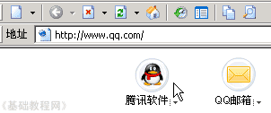
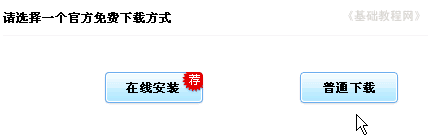
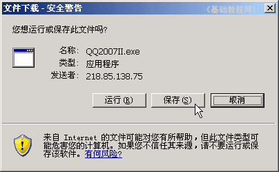
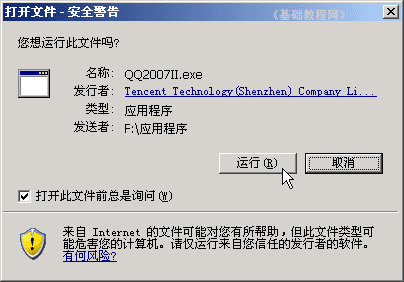
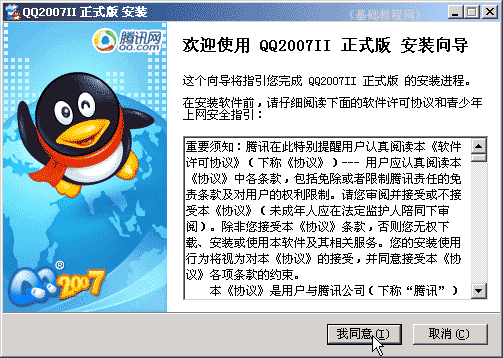
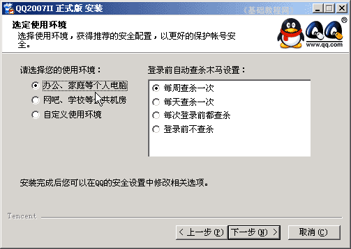
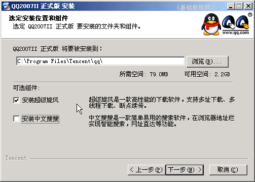
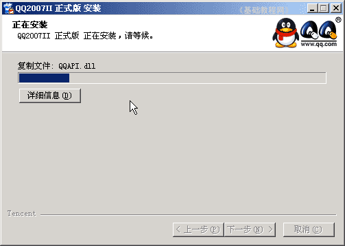
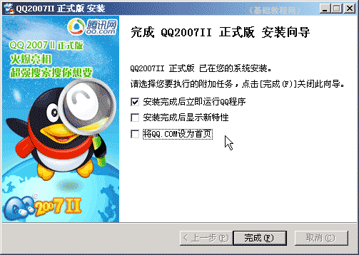
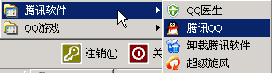

QQ聊天操作基础
二、下载和安装 返回目录
有了QQ号以后，还要在系统中安装QQ软件，然后就可以通过软件来使用聊天功能了，下面我们来看一个练习；
1、下载QQ程序
1）进入腾讯首页，找到“腾讯软件”按钮，点击进入网页，http://im.qq.com/

2）在中间找到一个“立即下载”的按钮，点击进入下载页面；
3）然后在中间出来两个下载按钮，选择右边的“普通下载”，左边的是在线安装，先下载一个安装程序，运行这个安装程序可以在线安装；

4)下载完以后，双击运行下载的安装程序(QQ2007II.exe)，开始进行安装，
如果担心下载后找不着了，可以瞄准点右键，选“目标另存为”，自己选择一个保存位置下载；

2、安装QQ软件
1）找到下载的QQ软件，双击运行该程序，进入安装面板窗口，如果出来安全警报，点“运行”按钮；

2）在出来的“许可协议、青少年上网安全指引”面板，点击“我同意”，进入下一步安装界面；

3）接下来选择使用环境，在左边根据自己的场所选择一个，然后点“下一步”继续；

4）接下来的选择安装的位置和其他组件，可以根据自己的需要选择，安装的时候打勾的地方一般要特别注意，
这儿去掉了“中文搜搜”组件，保留超级旋风下载工具，点“下一步”按钮继续；

5）检查一下没什么错误，点“下一步”按钮，开始安装程序，有一个蓝色的进度条不断前进；

6）然后出来一个“完成”面板，检查一下打勾的地方，根据需要保留，这儿保留第一个勾“立即运行”，后面两个去掉，点“完成”按钮，结束安装；

7）点“完成”按钮，过一阵出来一个QQ登录窗口，表示程序已经可以正常运行，
先进行一下扫描检查，然后光标停在第一行的QQ号那儿，等待输入QQ号；
8）安装以后，会在桌面、快速启动栏、开始菜单、启动里放置快捷方式，可以根据需要进行删除或保留；

启动里面的快捷方式，可以让机子每次一开就自动运行QQ，
这儿只保留桌面上的腾讯QQ快捷方式，其他的都删除，注意这儿只是删除了快捷方式，软件并没有卸载；
本节学习了下载和安装QQ软件的基本方法，如果你成功地完成了练习，请继续学习下一课内容；
本教程由86团学校TeliuTe制作|著作权所有
基础教程网：http://teliute.org/
美丽的校园……
转载和引用本站内容，请保留版权信息和本站链接。